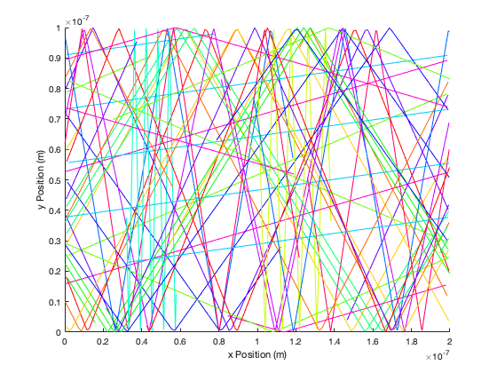

Contents
Script that runs the simulation for Part1:Electron Modelling
The following code creates a 2-D plot of particle trajectories
clear all clc close all global tstep global setting %choose what want to plot setting=1;%2-D plot of particle trajectories %setting=2;% Temperature plot %initial parameters and constants watchplot=false; pausetime=0.001; mass=0.26*9.1093*10^(-31); kbolts=1.380*10^(-23); %set tempature to 300K T=300; %caculate thermal velocity thermalVelo=(kbolts*T/mass)^(0.5); %set time step in seconds tstep=1e-9/thermalVelo/5; hold on if(setting==1) boxes(1,1)=0;%x boxes(1,2)=0;%y boxes(1,3)=0;%hight boxes(1,4)=0;%width watchplot=true; xlabel('x Position (m)') ylabel('y Position (m)') end if(setting==2) boxes(1,1)=0;%x boxes(1,2)=0;%y boxes(1,3)=0;%hight boxes(1,4)=0;%width end % boxes(1,1)=100e-9;%x % boxes(1,2)=50e-9;%y % boxes(1,3)=40e-9;%hight % boxes(1,4)=40e-9;%width % % boxes(2,1)=30e-9;%x % boxes(2,2)=30e-9;%y % boxes(2,3)=20e-9;%hight % boxes(2,4)=20e-9;%width %set number of electrons in simulation numelec=100; %set number of particle trajectories to plot xwatch=1:15; plotnum=length(xwatch); %create color map color_map=hsv(plotnum); %set how often to plot particle trajectorie watchstep=8; %create array of electrons for i=1:numelec electrons(i,:)=createElectron(boxes,thermalVelo); end %initialize array that records last two electron positions for k=1:length(xwatch) paths(1,k*2-1)=electrons(xwatch(k),1); paths(1,k*2)= electrons(xwatch(k),2); end for t=1:3000 %simulation for n time steps %move electrons according to velocity and boundary conditions electrons=moveElectrons(electrons,boxes); if(setting==2) %calculate and plot temperature vxsqavg=sum(electrons(:,3).^2)/numelec; vysqavg=sum(electrons(:,4).^2)/numelec; vtsqavg=vysqavg+vxsqavg; tempature(t)=vtsqavg*mass/kbolts/2; time(t)=t*tstep; hold off plot(time,tempature) xlabel('Time (s)') ylabel('Tempature (K)') pause(0.01) end if(watchplot)%decide whether to plot the 2-D particle trajectories if (mod(t,watchstep)==0) for k=1:length(xwatch) %records last two electron positions paths(2,k*2-1)=paths(1,k*2-1); paths(2,k*2)= paths(1,k*2); paths(1,k*2-1)=electrons(xwatch(k),1); paths(1,k*2)=electrons(xwatch(k),2); end for k=1:length(xwatch) if (abs(paths(1,k*2-1) -paths(2,k*2-1) )<20e-9) %plot the 2-D particle trajectories plot(paths(:,k*2-1),paths(:,k*2),'-','Color',color_map(k,:)) xlim([0 200e-9]) ylim([0 100e-9]) end end pause(0.01) end end end